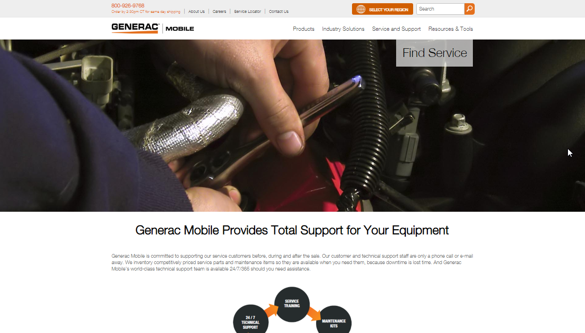
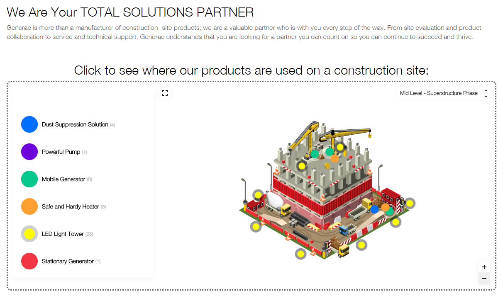

Generac Webinars
Collaborating with other departments, I organized webinars using GoToWebinar.
Including the following:
- Creating webinar landing pages
- Creating and distributing a calendar to corresponding email and ad personnel that let them know when email and ads should be sent/ launched for which webinar
- Creating webinar graphics for registration page and sometimes LinkedIn
- Launching the LIVE broadcasts (as an Admin)
- Creating the event in GoToWebinar
- Starting the webinar for everyone
- Adding and starting polls in the live broadcast
- Pulling up live questions for presentors to answer during the webinar
- Ending webinar
- Working with the department on what is needed for the webinars and when
- Providing a practice run to those who are inexperienced and guiding them through the process

Generac Mobile Products Service Page
- Created a form using Kentico CMS
- Styled form
- Created page using a mockup for layout and content

Generac Mobile Engineering Procurement Construction Page: Interactive Map
- Created page using a mockup for layout and content
- Used a resource (Mapplic) to create an interactive map of construction site where Generac Mobile products would be used
- Plotted points on map
- Styled pin markers to stay stylistically consistant
- Created color coded images for sidebar to match pin point colors
- Communicated with Mobile department throughout entire process to confirm things are as they should be

My First Website
No longer on the school's server, lives on in memory
- Created the top left icon
- Javascipt slide show on homepage
- Page of quotes using custom blockquote styling
- Basic HTML and CSS

Redesigning nevsink.com
Design goal: become more marketable with a better website to increase leads
- Wordpress site
- Created from scratch
- Needed a more modern looking site as an upgrade from previous Joomla CMS
- Wix.com site
- Collaborated with marketing and art to design overall layout
- Helped to add products to new site
- Used Adobe Illustrator to re-create product images of labels